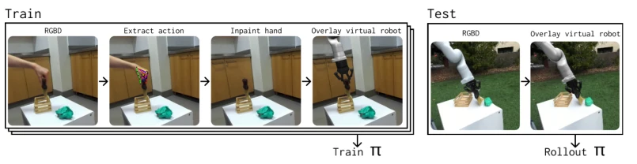
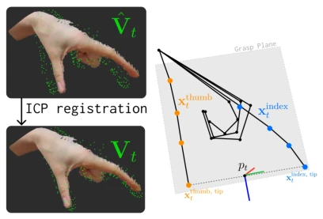
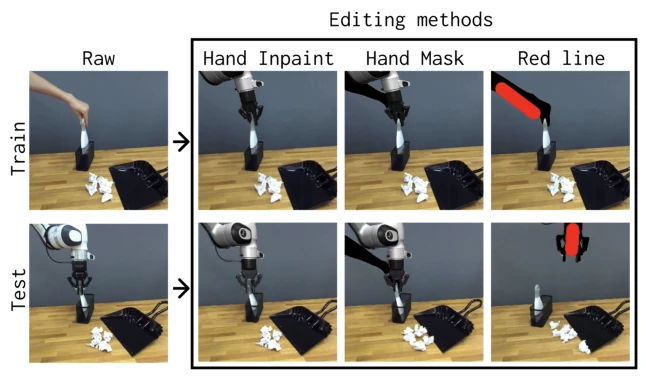
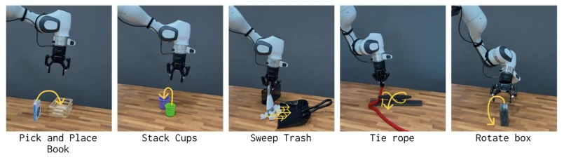
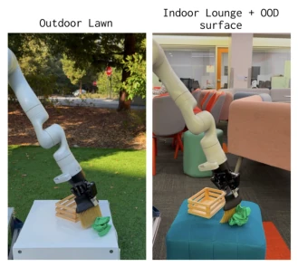
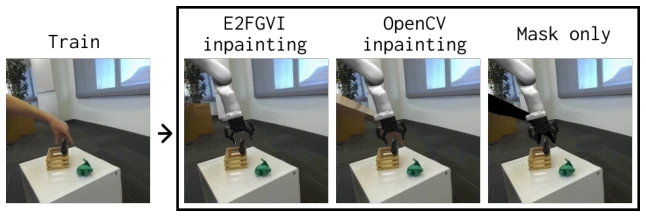
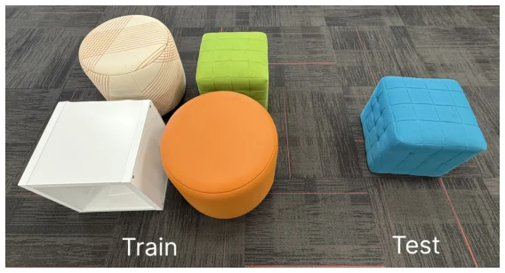
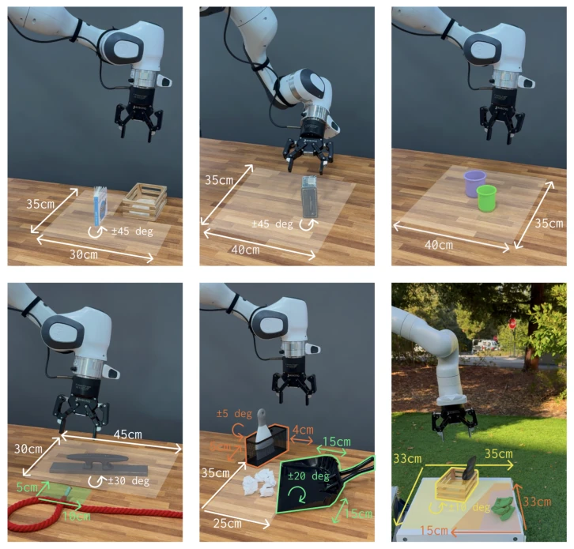

Figure 1: Overview of Phantom. Our method enables training robot policies without collecting any robot data. We first collect human video demonstrations in diverse environments and use inpainting to remove the human hand. A rendered robot is then inserted into the scene using the estimated hand pose. The resulting augmented dataset is used to train an imitation learning policy, which is deployed zero-shot on a real robot.

Figure 2: Overview of our pipeline for learning robot policies from human videos. During training, we first estimate the hand pose in each frame of a human video demonstration and convert it into a robot action. We then remove the human hand using inpainting and overlay a virtual robot in its place. The resulting augmented dataset is used to train an imitation learning policy, π. At test time, we overlay a virtual robot on real robot observations to ensure visual consistency, enabling direct deployment of the learned policy on a real robot.

Figure 3: Left: To refine the HaMeR predicted mesh points ˆVt shown in green, we use ICP registration to align them with the partial point cloud of the hand, Pt to obtain Vt. Right: After aligning the HaMeR key- points with the hand point cloud, we calculate the target position pt.

Figure 4: The three data-editing strategies we compare.
实验Experiments
在 Franka 和 Kinova 机器人上评估，任务包括书本放置、叠杯子、扫垃圾、系绳结等。基线对比了 Hand Mask、Red Line 和 Vanilla。结果显示 Hand Inpaint (Phantom) 表现最佳，分布内场景成功率最高达 92%，Red Line 和 Vanilla 全失败。在分布外场景（户外、室内新环境）泛化性良好，但在未见表面上性能下降 20%。消融实验表明高质量 Inpainting (E2FGVI) 优于低质量，且推理时叠加虚拟机器人至关重要。相比 Hand Mask，Phantom 推理速度快 73%，因为无需扩散模型生成掩码。扫垃圾任务评估了多个完成度级别（Sweep > 0, 2, 4），Phantom 在复杂动态下表现稳健。证明了仅用人类视频训练机器人策略的可行性。
—

Figure 5: Tasks evaluated in an in-distribution scene — Pick and Place Book: The robot must pick up a book and place it inside a wooden container. Stack Cups: The robot must stack the green cup inside the purple cup. Precise alignment is critical, as the cups differ in diameter by only 1.5 cm. Sweep Trash: The robot must pick up a sweeper and sweep six pieces of trash into a dustpan. This task involves coordinated multi-object manipulation, requiring the robot to control the sweeper while simultaneously managing the movement of mul- tiple loose objects. Additionally, the pieces of trash exhibit unpredictable dynamics, necessitating continuous adaptation based on real-time feedback. Tie Rope: The robot must tie a simplified cleat hitch, a sailing knot that follows a figure-eight ∞pattern. T

Figure 6: The out-of-distribution evaluation scenes used to evaluate the sweeping task on the Kinova robot.

Figure 7: The three inpainting strategies we compare.
其他图片Other Figures

Figure 9: Left: surfaces used during human video data collection for the kinova sweep task. Right: Unseen surface used to evaluate policy.

Figure 10: Variation in object placement during evaluations of each task.